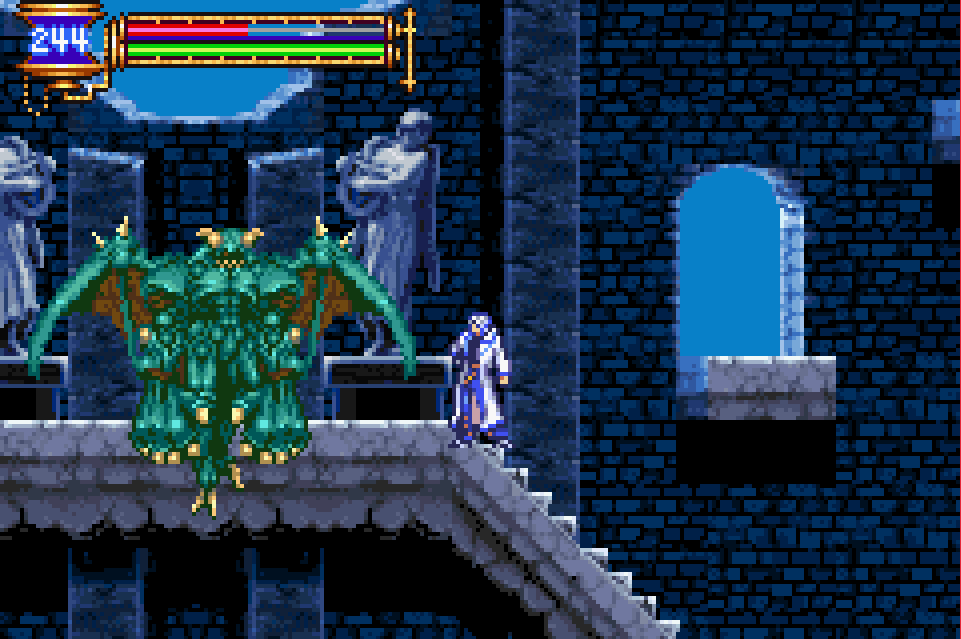
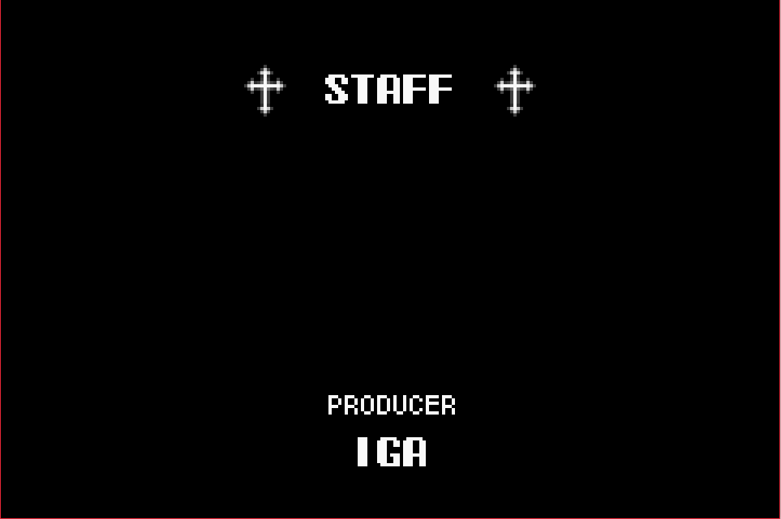
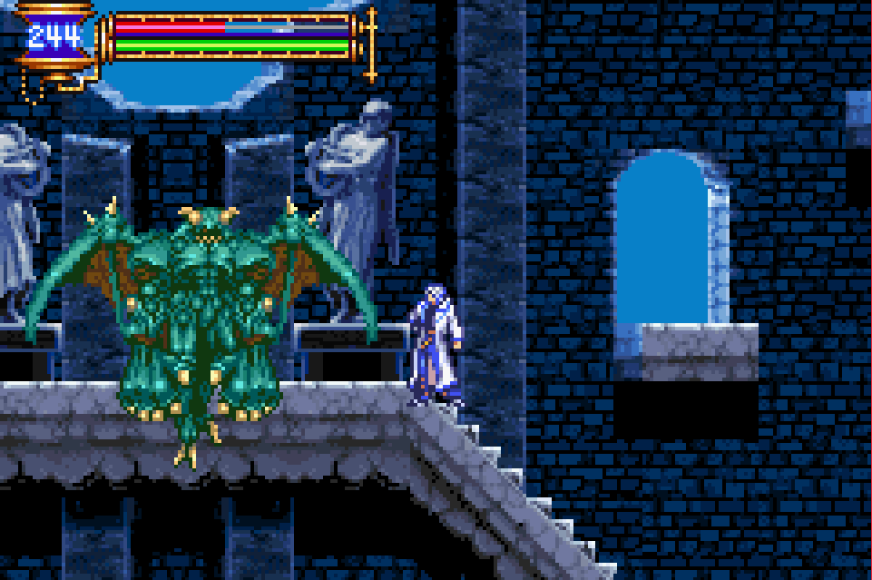
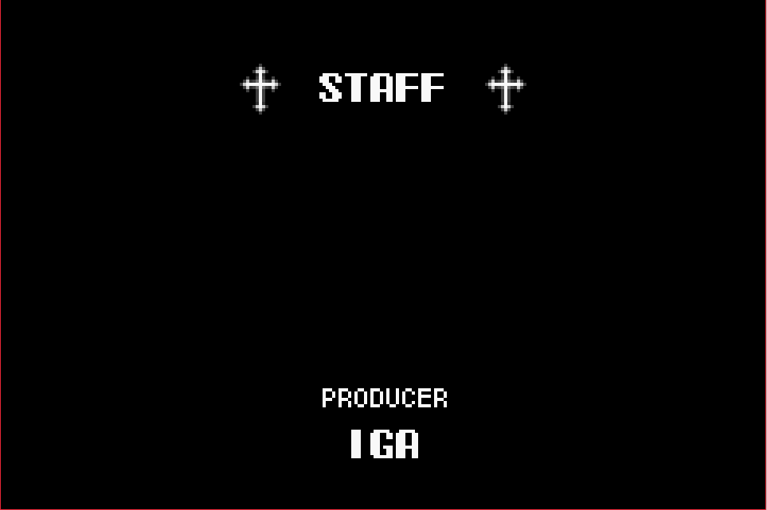

Castlevania: Aria of Sorrow

Complete on 2018-04-2
5 / 5
Release Date: May 6, 2003
Meta Score: 91
Screenshots
 



Notes
Castlevania: Aria of Sorrow is one of three Castlevania games we'll be playing through on the challenge, and generally considered the best one. I tend to agree with this feeling.
The game follows the (now classic) MetroidVania formula. You explore the castle, fight bosses, and get powerups which unlock the way to new areas of the castle. However AoS has a few twists on the classic formula.
The story is good, and has a significant twist over the usual Castlevania format. Dracula is dead, but someone born at the instant of his death is destined to inherit his power. Soma, the protagonist, was visiting a Japanese shrine at the moment of the eclipse and got sucked into Dracula's castle along with his friend (Girlfriend?) Mina. He just wants to get out safely, but gets sucked into the conspiracy. I think it suffers in the telling, which is in occasional plot text dumps when you run into someone in the castle.
Gameplay is fairly standard Castlevania stuff. Run, jump, and hit various undead creatures. You equip different weapons, like swords and axes, rather than the classic whip. Different weapons have different trade-offs between power, range, and speed, and provide good rewards for exploration. Bosses are interesting, generally challenging but not frustrating due to nearby save points. They telegraph their attacks nicely and so feel fair.
The big twist in AoS is the soul collection system. Every enemy type in the game has a unique soul, which they have a chance of dropping on death. Each of these grants a unique power for the player to use. Interestingly, some of the powerups to unlock new areas of the castle are just these souls you have to equip, like the Giant Bat soul which allows you to transform into a bat and fly around. Some are just new innate abilities you unlock though. This gives the game a pleasing collection mechanic, for the obsessive collectors out there. Some of the drop rates are quite low, so it can be frustrating to catch 'em all, as you end up grinding an enemy for ages. For this playthrough I just stuck with whatever happened to drop, which worked well enough.
The game looks pretty nice graphically, and has great variety in enemy designs. There are a few pallet swaps in the end game, but it's not too egregious. One criticism though, is that I found some platforms hard to pick out from the background.
Overall, the game is just really well executed. It has tight controls, good exploration and boss fights, and enough twists on the classic MetroidVania formula to feel fresh. I had a lot of fun replaying this game another time, and blasted through it in almost no time.